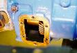
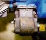
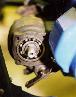
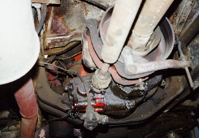

Most heavy duty transmissions have PTO ports onto which a PTO adpater can be bolted. Some examples of transmissions with PTO ports include the T-18, T-19, NP435, NV4500, SM465, and SM420. The PTO adapters I've seen all have a front and rear output.
Since these transmission PTO adapters are driven off of the countershaft, their speed and direction is not effected by the gear that the transmission is in. Only engine RPM can be used to change the speed. Normally, the PTO is only used with the transmission in neutral.
|  | Plate removed from PTO port on T-18. |
|  | Top view of transmission PTO adapter on CJ T-18. It can be torn apart and rebuilt for rear or front output. The unit can also be mounted so the shaft is high or low and the shift lever can be mounted on either side. |
|  | Back view of transmission PTO adapter on CJ T-18. This PTO adapter has been set up for rear output. |
|  | Transmission PTO adapter on 3 ton GMC tow truck from the early 60s. This particular PTO adapter is attached to a SM420 transmission. The adapter itself is red, the PTO shaft runs parallel with the drive shaft. |
Thanks to Jeepin Joe Heinrich for the T-18 transmission PTO adapter pictures and information.
{kind=link}
{kind=link}
{kind=link}
{kind=link}